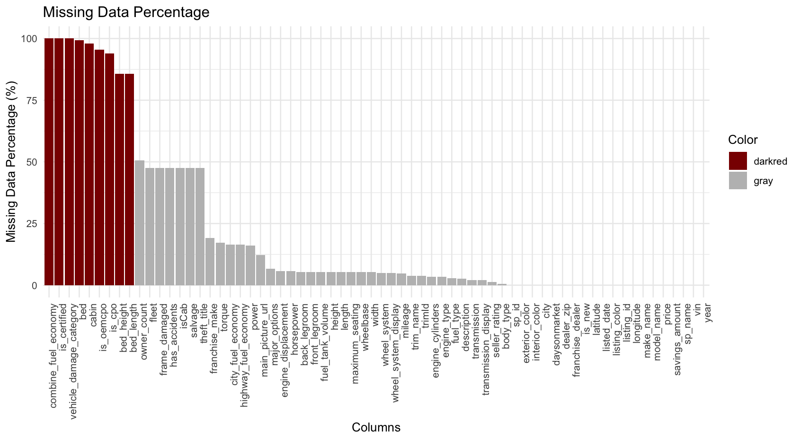

This project requires a large amount of used vehicle data and state information. For this purpose, we planned to collect data from one of the large online platforms for selling used vehicles, such as Cargurus and Carmax, to obtain vehicle price information as well as various characteristics of used cars. However, most of these platforms do not provide APIs; even if they did, it would require a partnership. For this reason, we decided to collect data through web scraping. In order to collect large amounts of data through web scraping, i.e., scraping a large number of web pages, we continuously make data requests to web servers and collect the data that is responded to. However, for the similar repetitive requests from a given client, the web server detects the bot's activity and blocks the user from accessing it. Eventually, we utilized Selenium to bypass these blocks by performing browser and user interface-like activities on the website, making distinguishing it from a web scraping bot difficult. The code below utilizes Selenium to scrape a webpage.
View Code
# Libraries library(tidyverse) library(httr) library(RSelenium) library(rvest) library(stringr) ######################################################################################################## # Collection of zipcode information for representative regions of the United States ######################################################################################################## ##Selenium remDr <- remoteDriver(remoteServerAddr="localhost", port=4445L, browserName="chrome") remDr$open() # URL zipcode_url <- 'https://www.edq.com/resources/glossary/zip-codes-of-major-cities-in-the-united-states/' remDr$navigate(zipcode_url) # Scraping html code from the html page web <- remDr$getPageSource()[[1]] %>% read_html() # Collecting zipcodes zipcode_strs <- web %>% html_elements(".BulletListStyle1 .NormalTextRun") %>% html_text() # Initialize an empty vector to store the extracted zipcodes extracted_zipcodes <- numeric(length(zipcode_strs)) # Loop through each string in the array for (i in 1:length(zipcode_strs)) { # Extract the first 5 digits from the string if they are numeric if (grepl("^\\d{5}", zipcode_strs[i])) { extracted_zipcode <- substr(zipcode_strs[i], 1, 5) print(extracted_zipcode) extracted_zipcodes[i] <- extracted_zipcode } } extracted_zipcodes <- extracted_zipcodes[extracted_zipcodes != 0] ######################################################################################################## # Collect used vehicle data from www.cargurus.com ######################################################################################################## ##Variables base_url <- 'https://www.cargurus.com/Cars/inventorylisting/viewDetailsFilterViewInventoryListing.action?' base_url <- paste(base_url, 'sourceContext=carGurusHomePageModel&', sep='') base_url <- paste(base_url, 'entitySelectingHelper.selectedEntity=&', sep='') base_url <- paste(base_url, 'zip=__ZIP__#resultsPage=__PAGE__', sep='') # Run Selenium remDr <- remoteDriver( remoteServerAddr = "localhost", port = 4445L, browserName = "chrome", extraCapabilities = list( chromeOptions = list( args = list('--headless') ) ) ) remDr <- remoteDriver(remoteServerAddr = "localhost", port = 4445L, browserName = "chrome") remDr$open() remDr$navigate('https://www.cargurus.com') # Define a data frame to store the data to be collected df <- data.frame( zipcode = numeric(0), name = character(0), price = numeric(0), mileage = numeric(0), city = character(0), state = character(0), year = numeric(0), make = character(0), model = character(0), body = character(0), doors = character(0), drivetrain = character(0), engine = character(0), color = character(0), fuel = character(0), transmission = character(0) ) # Define the page range start_page <- 1 end_page <- 1 # Loop to generate and print URLs for (extracted_zipcode in extracted_zipcodes) { # Substitute the ZIP code into the URL url_1 <- str_replace(base_url, '__ZIP__', extracted_zipcode) print(extracted_zipcode) for (page in start_page:end_page) { # Substitute the page number into the URL url <- str_replace(url_1, '__PAGE__', as.character(page)) remDr$navigate(url) #Sys.sleep(1) web <- remDr$getPageSource()[[1]] %>% read_html() zipcodes <- rep(extracted_zipcode, 16) ################################################## # Parse details of used vehicles from HTML page ################################################## model_name <- web %>% html_elements(".vO42pn") %>% html_text() price <- web %>% html_elements(".JzvPHo") %>% html_text() car_price <- numeric(length(price)) # Loop through each string in the array for (i in 1:length(price)) { # Extract the dollar amount from the string # Using regular expression to match the dollar sign and digits with commas match <- regexpr("\\$[0-9,]+", price[i]) if (match > 0) { amount_str <- substr(price[i], match, attr(match, "match.length")) # Remove the dollar sign and commas, then convert to numeric amount <- as.numeric(gsub("\\$|,", "", amount_str)) car_price[i] <- amount } } loc <- web %>% html_elements(".umcYBP span") %>% html_text() # Initialize empty arrays to store extracted information mileages <- numeric() cities <- character() states <- character() # Loop through the array with a step of 4 for (i in seq(1, length(loc), by = 4)) { # Extract mileage information (numeric with optional comma) mileage_match <- regmatches(loc[i + 1], regexpr("\\d+(,\\d+)* mi", loc[i + 1])) if (length(mileage_match) > 0) { mileage_str <- gsub(",", "", mileage_match[[1]]) # Remove commas mileage_str <- gsub(" mi", "", mileage_str) # Remove " mi" mileages <- c(mileages, as.numeric(mileage_str)) } # Extract city and state information (city, state format) city_state_match <- regmatches(loc[i + 3], regexpr("(.+), ([A-Z]{2})", loc[i + 3])) if (length(city_state_match) > 0) { city <- substr(city_state_match[[1]][1], 1, nchar(city_state_match[[1]][1]) - 4) # Remove the last 3 digits state <- substr(city_state_match[[1]][1], nchar(city_state_match[[1]][1]) - 1, nchar(city_state_match[[1]][1])) # Extract the last 2 characters cities <- c(cities, city) states <- c(states, state) } } # Extract values from elements with "dd" tag within "propertyList" class property_list <- web %>% html_elements("dl") %>% html_text() # Extract values year_value <- web %>% html_elements("dt:contains('Year') + dd") %>% html_text() make_value <- web %>% html_elements("dt:contains('Make') + dd") %>% html_text() model_value <- web %>% html_elements("dt:contains('Model') + dd") %>% html_text() body_type_value <- web %>% html_elements("dt:contains('Body') + dd") %>% html_text() doors_value <- web %>% html_elements("dt:contains('Doors') + dd") %>% html_text() drivetrain_value <- web %>% html_elements("dt:contains('Drivetrain') + dd") %>% html_text() engine_value <- web %>% html_elements("dt:contains('Engine') + dd") %>% html_text() exterior_color_value <- web %>% html_elements("dt:contains('Exterior') + dd") %>% html_text() fuel_type_value <- web %>% html_elements("dt:contains('Fuel') + dd") %>% html_text() transmission_value <- web %>% html_elements("dt:contains('Transmission') + dd") %>% html_text() # Create a data frame by incorporating an array of collected details for each vehicle new_df <- cbind(zipcodes, model_name, car_price, mileages, cities, states, year_value, make_value, model_value, body_type_value, doors_value, drivetrain_value, engine_value, exterior_color_value, fuel_type_value, transmission_value ) colnames(new_df) <- colnames(df) # Append to previously collected data frame df <- rbind(df, new_df) } } # Export all collected data frames as csv file write.csv(df, file = "my_data.csv", row.names = TRUE) | cs |
Despite these efforts, it took a lot of work to collect a large amount of data in a short period due to the severe rendering time of the webpage. In the end, we abandoned the idea of using web scraping to collect used vehicles and downloaded the used vehicle data collected in September 2020 from Kaggle and used it in this project. Although the data was collected about three years ago, our project aims to analyze various vehicle characteristics and their relationship to vehicle prices and predictions, so we focused on the amount of data and included as many vehicle characteristics as possible rather than when the data was collected. The raw data consists of a total of 3.40 million records and 66 columns. You can download the raw data via the link below.
The table below shows the column names and brief descriptions of the columns provided by the data.
| Feature Name | Type | Definition |
| vin | object | The car's vehicle identification number (VIN) is the identifying code for a SPECIFIC automobile. |
| back_legroom | object | Measure the distance between the rear and front backrests while keeping the front legroom at a standard 40 inches. |
| bed | object | Category of bed size(open cargo area) in pickup truck. Null usually means the vehicle isn't a pickup truck |
| bed_height | object | Height of bed in inches |
| bed_length | object | Length of bed in inches |
| body_type | object | Body Type of the vehicle. Like Convertible, Hatchback, Sedan, etc. |
| cabin | object | Category of cabin size(open cargo area) in pickup truck. Eg: Crew Cab, Extended Cab, etc. |
| city | object | city where the car is listed. Eg: Houston, San Antonio, etc. |
| city_fuel_economy | float64 | Fuel economy in city traffic in km per litre |
| combine_fuel_economy | float64 | Combined fuel economy is a weighted average of City and Highway fuel economy in km per litre |
| daysonmarket | int64 | Days since the vehicle was first listed on the website. |
| dealer_zip | object | Zipcode of the dealer |
| description | object | Vehicle description on the vehicle's listing page |
| engine_cylinders | object | The engine configuration. Eg: I4, V6, etc. |
| engine_displacement | float64 | engine_displacement is the measure of the cylinder volume swept by all of the pistons of a piston engine, excluding the combustion chambers. |
| engine_type | object | The engine configuration. Eg: I4, V6, etc. |
| exterior_color | object | Exterior dominant color of the vehicle |
| fleet | object | Whether the vehicle was previously part of a fleet. |
| frame_damaged | object | Whether the vehicle has a damaged frame. |
| franchise_dealer | bool | Whether the dealer is a franchise dealer. |
| franchise_make | object | The company that owns the franchise. |
| front_legroom | object | The legroom in inches for the passenger seat |
| fuel_tank_volume | object | Fuel tank's filling capacity in gallons |
| fuel_type | object | Dominant type of fuel ingested by the vehicle. |
| has_accidents | object | Whether the vin has any accidents registered. |
| height | object | Height of the vehicle in inches |
| highway_fuel_economy | float64 | Fuel economy in highway traffic in km per litre |
| horsepower | float64 | Horsepower is the power produced by an engine. |
| interior_color | object | Interior color of the vehicle, usually a fancy one same as the brochure |
| isCab | object | Whether the vehicle was previously taxi/cab. |
| is_certified | float64 | Whether the vehicle is certified. Certified cars are covered through warranty period |
| is_cpo | object | Pre-owned cars certified by the dealer |
| is_new | bool | If True means the vehicle was launched less than 2 years before 2020. |
| is_oemcpo | object | Pre-owned cars certified by the manufacturer |
| latitude | float64 | Latitude from the geolocation of the dealership |
| length | object | Length of the vehicle in inches |
| listed_date | object | The date the vehicle was listed on the website. |
| listing_color | object | Dominant color group from the exterior color. |
| listing_id | int64 | Unique Listing id from the website |
| longitude | float64 | Longitude from the geolocation of the dealership |
| main_picture_url | object | main_picture_url |
| major_options | object | major_options |
| make_name | object | make_name |
| maximum_seating | object | maximum_seating |
| mileage | float64 | mileage |
| model_name | object | model_name |
| owner_count | float64 | owner_count |
| power | object | power |
| price | float64 | price |
| salvage | object | salvage |
| savings_amount | int64 | savings_amount |
| seller_rating | float64 | seller_rating |
| sp_id | float64 | sp_id |
| sp_name | object | sp_name |
| theft_title | object | theft_title |
| torque | object | torque |
| transmission | object | transmission |
| transmission_display | object | transmission_display |
| trimId | object | trimId |
| trim_name | object | trim_name |
| vehicle_damage_category | float64 | vehicle_damage_category |
| wheel_system | object | wheel_system |
| wheel_system_display | object | wheel_system_display |
| wheelbase | object | wheelbase |
| width | object | width |
| year | int64 | year |
In addition, we collected zipcode data from usps.com to identify which states the vehicle listings were from by utilizing the zip codes contained in the collected data. The Excel file is organized into three sheets and provides the information. However, in order to extract only the data needed for this project, only the first sheet, consisting of about 44,000 items, was converted to a CSV file and utilized. Below is the path of the data collected from USPS. The collected data is integrated with the previously collected used vehicle data.
Lorem ipsaaewfaeasdfwefaweliqua. Ut enim ad minim veniam, quis nostrud exercitation ullamco laboris nisi ut aliquip ex ea commodo consequat. Duis aute irure dolor in reprehenderit in voluptate velit esse cillum dolore eu fugiat nulla pariatur. Excepteur sint occaecat cupidatat non proident, sunt in culpa qui officia deserunt mollit anim id est laborum.
The collected data is stored in a CSV file format with a comma (,) separating each data point. This dataset consists of a massive amount of data, over 9GB. To effectively handle this data with limited resources, we used R to clean the data using Python, which requires a lot of memory resources. Based on the raw data collected, we processed missing values and outliers, deleted unnecessary data, and converted them to appropriate data types. Below is the result of the "str(df)" command in R, showing the name of each column of the raw data and a portion of the data collected.
'data.frame': 3000040 obs. of 66 variables: $ vin : chr "ZACNJABB5KPJ92081" "SALCJ2FX1LH858117" "JF1VA2M67G9829723" "SALRR2RV0L2433391" ... $ back_legroom : chr "35.1 in" "38.1 in" "35.4 in" "37.6 in" ... $ bed : chr "" "" "" "" ... $ bed_height : chr "" "" "" "" ... $ bed_length : chr "" "" "" "" ... $ body_type : chr "SUV / Crossover" "SUV / Crossover" "Sedan" "SUV / Crossover" ... $ cabin : chr "" "" "" "" ... $ city : chr "Bayamon" "San Juan" "Guaynabo" "San Juan" ... $ city_fuel_economy : num NA NA 17 NA NA NA NA NA NA NA ... $ combine_fuel_economy : logi NA NA NA NA NA NA ... $ daysonmarket : int 522 207 1233 196 137 242 447 70 196 510 ... $ dealer_zip : chr "00960" "00922" "00969" "00922" ... $ description : chr "[!@@Additional Info@@!]Engine: 2.4L I4 ZERO EVAP M-AIR,Full Size Temporary Use Spare Tire,Manufacturer's Statem"| __truncated__ $ engine_cylinders : chr "I4" "I4" "H4" "V6" ... $ engine_displacement : num 1300 2000 2500 3000 2000 2000 2500 2000 2000 2000 ... $ engine_type : chr "I4" "I4" "H4" "V6" ... $ exterior_color : chr "Solar Yellow" "Narvik Black" "None" "Eiger Gray" ... $ fleet : chr "" "" "False" "" ... $ frame_damaged : chr "" "" "False" "" ... $ franchise_dealer : chr "True" "True" "True" "True" ... $ franchise_make : chr "Jeep" "Land Rover" "FIAT" "Land Rover" ... $ front_legroom : chr "41.2 in" "39.1 in" "43.3 in" "39 in" ... $ fuel_tank_volume : chr "12.7 gal" "17.7 gal" "15.9 gal" "23.5 gal" ... $ fuel_type : chr "Gasoline" "Gasoline" "Gasoline" "Gasoline" ... $ has_accidents : chr "" "" "False" "" ... $ height : chr "66.5 in" "68 in" "58.1 in" "73 in" ... $ highway_fuel_economy : num NA NA 23 NA NA NA NA NA NA NA ... $ horsepower : num 177 246 305 340 246 247 186 247 246 296 ... $ interior_color : chr "Black" "Black (Ebony)" "None" "Gray (Ebony/Ebony/Ebony)" ... $ isCab : chr "" "" "False" "" ... $ is_certified : logi NA NA NA NA NA NA ... $ is_cpo : chr "" "" "" "" ... $ is_new : chr "True" "True" "False" "True" ... $ is_oemcpo : chr "" "" "" "" ... $ latitude : num 18.4 18.4 18.3 18.4 18.4 ... $ length : chr "166.6 in" "181 in" "180.9 in" "195.1 in" ... $ listed_date : chr "2019-04-06" "2020-02-15" "2017-04-25" "2020-02-26" ... $ listing_color : chr "YELLOW" "BLACK" "UNKNOWN" "GRAY" ... $ listing_id : int 237132766 265946296 173473508 266911050 270957414 262940541 244110426 275458784 266911040 238225156 ... $ longitude : num -66.2 -66.1 -66.1 -66.1 -66.1 ... $ main_picture_url : chr "https://static.cargurus.com/images/forsale/2020/05/18/18/53/2019_jeep_renegade-pic-3296019950109819645-152x114.jpeg" "https://s"... $ major_options : chr "['Quick Order Package']" "['Adaptive Cruise Control']" "['Alloy Wheels', 'Bluetooth', 'Backup Camera', 'Heated Seats']" "" ... $ make_name : chr "Jeep" "Land Rover" "Subaru" "Land Rover" ... $ maximum_seating : chr "5 seats" "7 seats" "5 seats" "7 seats" ... $ mileage : num 7 8 NA 11 7 12 14 11 8 254 ... $ model_name : chr "Renegade" "Discovery Sport" "WRX STI" "Discovery" ... $ owner_count : num NA NA 3 NA NA NA NA NA NA NA ... $ power : chr "177 hp @ 5,750 RPM" "246 hp @ 5,500 RPM" "305 hp @ 6,000 RPM" "340 hp @ 6,500 RPM" ... $ price : num 23141 46500 46995 67430 48880 ... $ salvage : chr "" "" "False" "" ... $ savings_amount : int 0 0 0 0 0 0 0 0 0 0 ... $ seller_rating : num 2.8 3 NA 3 3 3 2.8 3 3 3 ... $ sp_id : num 370599 389227 370467 389227 389227 ... $ sp_name : chr "Flagship Chrysler" "Land Rover San Juan" "FIAT de San Juan" "Land Rover San Juan" ... $ theft_title : chr "" "" "False" "" ... $ torque : chr "200 lb-ft @ 1,750 RPM" "269 lb-ft @ 1,400 RPM" "290 lb-ft @ 4,000 RPM" "332 lb-ft @ 3,500 RPM" ... $ transmission : chr "A" "A" "M" "A" ... $ transmission_display : chr "9-Speed Automatic Overdrive" "9-Speed Automatic Overdrive" "6-Speed Manual" "8-Speed Automatic Overdrive" ... $ trimId : chr "t83804" "t86759" "t58994" "t86074" ... $ trim_name : chr "Latitude FWD" "S AWD" "Base" "V6 HSE AWD" ... $ vehicle_damage_category: logi NA NA NA NA NA NA ... $ wheel_system : chr "FWD" "AWD" "AWD" "AWD" ... $ wheel_system_display : chr "Front-Wheel Drive" "All-Wheel Drive" "All-Wheel Drive" "All-Wheel Drive" ... $ wheelbase : chr "101.2 in" "107.9 in" "104.3 in" "115 in" ... $ width : chr "79.6 in" "85.6 in" "78.9 in" "87.4 in" ... $ year : int 2019 2020 2016 2020 2020 2020 2019 2020 2020 2020 ... | cs |
Find duplicate rows in the dataset and remove the duplicates from the dataset. You have identified 40 duplicate rows out of a total of 3,000,040 rows and removed the duplicate data.
# Checking for duplicate rows duplicate_rows <- sum(duplicated(df)) # Making a copy with the duplicated rows dropped df_cleaned <- df[!duplicated(df), ] | cs |
First, some features in this raw dataset contain a high percentage of missing values. Preprocessing these columns is required because a high rate of missing values can lead to information loss and biased results. The graph below shows the percentage of missing values for each column in the raw data, with the bar graph highlighted in red when the missing values are greater than 55% of the total data.
In the graph above, the red-colored features all show a missing rate of over 70%. Columns with a high missingness rate are deleted because the overall impact of the data analysis is too negative to justify creating and populating new missing values.
In the graph above, features such as fleet, frame_damaged, and isCab also have a relatively high percentage of missing values. However, these features are essential information for this project. Therefore, they are required to handle missing values. However, these features are attributes with Boolean values of True or False. Consequently, we will delete all the missing values of these features because filling in the missing values of these attributes will cause biased results. We will also delete all the missing values of the other features because they are essential information about the vehicle, and we have relatively more raw data for accurate results. Below is the code to remove the missing values.
# Calculate the number of missing values for each column in the dataframe missing_count <- df_cleaned01 %>% summarise_all(~ sum(is.na(.))) # Calculate the percentage of missing values for each column missing_percent <- missing_count / nrow(df_cleaned01) * 100 # Find columns with more than 50% missing values columns_with_high_missing <- names(missing_percent)[missing_percent > 55] # Create a new dataframe with columns removed df_cleaned02 <- df_cleaned01 %>% select(-one_of(columns_with_high_missing)) # Print the columns removed cat("Columns removed due to more than 50% missing values:\n") cat(columns_with_high_missing, sep = ", ") # Print the structure of the new dataframe str(df_cleaned02) # Remove all rows containing NA values from the dataframe df_cleaned03 <- na.omit(df_cleaned02) | cs |
If you look at the dataset, you'll notice that the features that represent numbers, such as "length", "width", "legroom", and "maximum_seating", are defined as string types, such as "66.5 in", "68 in", and "58.1 in", rather than numeric types. To compare the data, these features should be defined as numeric, so we convert the strings to numeric by removing the strings that represent meaningless units. You need to check for non-numeric data when converting from a character type to a numeric type. If a numeric feature expresses a missing value with "-" as shown in the code below, it cannot be converted to a numeric type. Therefore, before converting the type, convert "-" to an NA value, convert the type to a numeric type, and fill in the missing value with the average values.
# length # Remove "in" and convert to numeric df_cleaned04$length <- sub(" in", "", df_cleaned04$length) df_cleaned04$length[df_cleaned04$length == "--"] <- NA df_cleaned04$length <- as.numeric(df_cleaned04$length) df_cleaned04$length[is.na(df_cleaned04$length)] <- mean(df_cleaned04$length, na.rm = TRUE) | cs |
Features that consist of True and False values, such as frame_damaged and fleet, are defined as string types in the raw data. There are several advantages to converting these features to Boolean types. Boolean types use less memory, which reduces the overall memory usage of the dataset and is faster to compute. Therefore, all the columns consisting of True and False in this dataset were converted from string type to Boolean type like below.
# Convert character columns to boolean type df_cleaned04$fleet <- as.logical(tolower(df_cleaned04$fleet)) df_cleaned04$frame_damaged <- as.logical(tolower(df_cleaned04$frame_damaged)) df_cleaned04$franchise_dealer <- as.logical(tolower(df_cleaned04$franchise_dealer)) df_cleaned04$has_accidents <- as.logical(tolower(df_cleaned04$has_accidents)) df_cleaned04$isCab <- as.logical(tolower(df_cleaned04$isCab)) df_cleaned04$is_new <- as.logical(tolower(df_cleaned04$is_new)) df_cleaned04$salvage <- as.logical(tolower(df_cleaned04$salvage)) df_cleaned04$theft_title <- as.logical(tolower(df_cleaned04$theft_title)) | cs |
For the 'listed_date' column, the date is stored as a string type. Converting it to a date type can be more beneficial for date operations and visualization analysis.
# Convert listed_date to Date data type df_cleaned04$listed_date <- as.Date(df_cleaned04$listed_date) | cs |
'fuel_type' is a feature that represents the type of fuel used by the vehicle, and the value is composed of five fuel types. By converting the class to a categorical value, you can save memory, compute faster, and sort comparisons between categories.
# Convert fuel_type to a factor (categorical variable) df_cleaned04$fuel_type <- as.factor(df_cleaned04$fuel_type) | cs |
'power' indicates a vehicle's performance and is defined as a string type. This feature is stored as a combination of two pieces of data, such as "177 hp @ 5,750 RPM". The 'hp' in front of this data stands for horsepower, a feature already existing in this dataset. Therefore, we extract the value between this `@` and the RPM string to define a new feature, rpm, and assign it. Similarly, 'torque' is a combination of RPM and torque, so since RPM is a feature we already have, we extract only the torque value and use it.
# power # In power, horsepower already has a column, so only the rpm value is used here. # Create a new rpm column and delete the power field. df_cleaned04$rpm <- sub(".* @ ([0-9,]+) RPM", "\\1", df_cleaned04$power) df_cleaned04$rpm <- as.numeric(gsub(",", "", df_cleaned04$rpm)) df_cleaned04 <- df_cleaned04 %>% select(-power) | cs |
Join the zip code data collected by the USPS with the vehicle data. The "dealer_zip" in the vehicle data is a numeric type in the raw dataset, so any zeros in front of the zipcode will not match the zipcode format. For example, suppose you have a zip code of 00920. This data would be represented as 920, not 00920, in a column with a numeric type. For this reason, we convert "dealer_zip" in the vehicle dataset from numeric to alphanumeric and left-pad it with "0" for less than five digits of data. We then left-join it with the dataset collected from the USPS to get the state information. Rename the column with the added state information to 'state'.
# Zipcode and States # https://postalpro.usps.com/ZIP_Locale_Detail # Read the CSV file zip_csv <- 'ZIP_Locale_Detail.csv' df_zipcode<- read.csv(zip_csv) # Select and extract unique values from specific 2 columns in the data frame df_zipcode <- df_zipcode %>% distinct(DELIVERY.ZIPCODE, PHYSICAL.STATE) # Convert the 'PHYSICAL.ZIP' column to character type df_zipcode$DELIVERY.ZIPCODE <- as.character(df_zipcode$DELIVERY.ZIPCODE) # Pad the 'PHYSICAL.ZIP' column with leading zeros to make it 5 characters long df_zipcode$DELIVERY.ZIPCODE <- sprintf("%05s", df_zipcode$DELIVERY.ZIPCODE) # https://wisevoter.com/state-rankings/snowiest-states/ # Add state info df_cleaned05 <- df_cleaned04 %>% left_join(df_zipcode, by = c("dealer_zip" = "DELIVERY.ZIPCODE")) colnames(df_cleaned05)[colnames(df_cleaned05) == "PHYSICAL.STATE"] <- "state" dim(df_cleaned05) str(df_cleaned05) df_cleaned05[is.na(df_cleaned05$dealer_zip), ] df_cleaned05[df_cleaned05$dealer_zip == "", ] df_cleaned05[is.na(df_cleaned05$state), ] | cs |
View Code
# Set the CSV file path csv_file_path <- "used_cars_data.csv" # Read the CSV file df <- read.csv(csv_file_path) # Print the data frame str(df) ################################################################################ # Cleaning ################################################################################ # 1. Duplicated values # Checking for duplicate rows duplicate_rows <- sum(duplicated(df)) cat("The number of duplicate rows are", duplicate_rows, ".\n") # Making a copy with the duplicated rows dropped df_cleaned <- df[!duplicated(df), ] dim(df_cleaned) # 2. Missing Values # Load the necessary library library(dplyr) # Identify character-type columns char_columns <- df_cleaned %>% select_if(is.character) # Create a new dataframe with empty strings replaced by missing values df_cleaned01 <- df_cleaned # Replace empty strings ("") with NA in the entire dataframe df_cleaned01[df_cleaned01 == ""] <- NA # Load the necessary libraries library(ggplot2) # Calculate the missing percentage for each column in the dataframe missing_percent <- colMeans(is.na(df_cleaned01)) * 100 # Create a dataframe missing_data <- data.frame(Column = names(df_cleaned01), MissingPercent = missing_percent) # Highlight columns with 50% or more missing data in red missing_data$Color <- ifelse(missing_data$MissingPercent > 55, "High Rate", "Low Rate") # Visualization: Horizontal bar chart ggplot(data = missing_data, aes(x = reorder(Column, -MissingPercent), y = MissingPercent, fill = Color)) + geom_bar(stat = "identity") + labs(title = "Missing Data Percentage", x = "Columns", y = "Missing Data Percentage (%)") + theme_minimal() + theme(axis.text.x = element_text(angle = 90, hjust = 1)) + scale_fill_manual(values = c("Low Rate" = "gray", "High Rate" = "darkred")) # Calculate the number of missing values for each column in the dataframe missing_count <- df_cleaned01 %>% summarise_all(~ sum(is.na(.))) # Calculate the percentage of missing values for each column missing_percent <- missing_count / nrow(df_cleaned01) * 100 # Find columns with more than 50% missing values columns_with_high_missing <- names(missing_percent)[missing_percent > 55] # Create a new dataframe with columns removed df_cleaned02 <- df_cleaned01 %>% select(-one_of(columns_with_high_missing)) # Print the columns removed cat("Columns removed due to more than 50% missing values:\n") cat(columns_with_high_missing, sep = ", ") # Print the structure of the new dataframe str(df_cleaned02) # Remove all rows containing NA values from the dataframe df_cleaned03 <- na.omit(df_cleaned02) # Delete "main_picture_url" column df_cleaned03 <- df_cleaned03 %>% select(-main_picture_url) # Delete "description" column df_cleaned03 <- df_cleaned03 %>% select(-description) # Print the cleaned dataframe print(df_cleaned03) # Calculate the number of missing values for each column missing_count <- df_cleaned03 %>% summarise_all(~ sum(is.na(.))) # Print the result print(missing_count) head(df_cleaned03) write.csv(df_cleaned03, file = "used_cars_data_cleaned01.csv", row.names = TRUE) str(df_cleaned03) unique_values <- df_cleaned03 %>% summarise( fleet = paste(unique(fleet), collapse = ", "), frame_damaged = paste(unique(frame_damaged), collapse = ", "), franchise_dealer = paste(unique(franchise_dealer), collapse = ", "), has_accidents = paste(unique(has_accidents), collapse = ", "), isCab = paste(unique(isCab), collapse = ", "), is_new = paste(unique(is_new), collapse = ", "), salvage = paste(unique(salvage), collapse = ", "), theft_title = paste(unique(theft_title), collapse = ", ") ) print(unique_values) # Convert a column consisting of True and False values to character type to Boolean type. df_cleaned04 <- df_cleaned03 str(df_cleaned04) # back_legroom # Remove "in" and convert to numeric df_cleaned04$back_legroom <- sub(" in", "", df_cleaned04$back_legroom) # If there is "--" among the column values, replace it with null and fill it with the average value. df_cleaned04$back_legroom[df_cleaned04$back_legroom == "--"] <- NA df_cleaned04$back_legroom <- as.numeric(df_cleaned04$back_legroom) df_cleaned04$back_legroom[is.na(df_cleaned04$back_legroom)] <- mean(df_cleaned04$back_legroom, na.rm = TRUE) # engine_cylinders # Convert to the number of vehicle cylinders. unique(df_cleaned04$engine_cylinders ) # Split the engine_cylinders column by space and extract the first element df_cleaned04$engine_cylinders <- sapply(strsplit(df_cleaned04$engine_cylinders, " "), function(x) as.numeric(gsub("[^0-9]", "", x[1]))) df_cleaned04$engine_cylinders <- as.numeric(df_cleaned04$engine_cylinders) # front_legroom # Remove "in" and convert to numeric df_cleaned04$front_legroom <- sub(" in", "", df_cleaned04$front_legroom) # If there is "--" among the column values, replace it with null and fill it with the average value. df_cleaned04$front_legroom[df_cleaned04$front_legroom == "--"] <- NA df_cleaned04$front_legroom <- as.numeric(df_cleaned04$front_legroom) df_cleaned04$front_legroom[is.na(df_cleaned04$front_legroom)] <- mean(df_cleaned04$front_legroom, na.rm = TRUE) # fuel_tank_volume # Remove "gal" and convert to numeric df_cleaned04$fuel_tank_volume <- sub(" gal", "", df_cleaned04$fuel_tank_volume) df_cleaned04$fuel_tank_volume[df_cleaned04$fuel_tank_volume == "--"] <- NA df_cleaned04$fuel_tank_volume <- as.numeric(df_cleaned04$fuel_tank_volume) df_cleaned04$fuel_tank_volume[is.na(df_cleaned04$fuel_tank_volume)] <- mean(df_cleaned04$fuel_tank_volume, na.rm = TRUE) # engine_type # engine_type is replaced by engine_cylinders and fuel_type. The engine_type column is deleted. df_cleaned04 <- df_cleaned04 %>% select(-engine_type) # fuel_type # Convert fuel_type to a factor (categorical variable) df_cleaned04$fuel_type <- as.factor(df_cleaned04$fuel_type) # Convert character columns to boolean type df_cleaned04$fleet <- as.logical(tolower(df_cleaned04$fleet)) df_cleaned04$frame_damaged <- as.logical(tolower(df_cleaned04$frame_damaged)) df_cleaned04$franchise_dealer <- as.logical(tolower(df_cleaned04$franchise_dealer)) df_cleaned04$has_accidents <- as.logical(tolower(df_cleaned04$has_accidents)) df_cleaned04$isCab <- as.logical(tolower(df_cleaned04$isCab)) df_cleaned04$is_new <- as.logical(tolower(df_cleaned04$is_new)) df_cleaned04$salvage <- as.logical(tolower(df_cleaned04$salvage)) df_cleaned04$theft_title <- as.logical(tolower(df_cleaned04$theft_title)) str(df_cleaned04) # height # Remove "in" and convert to numeric df_cleaned04$height <- sub(" in", "", df_cleaned04$height) df_cleaned04$height[df_cleaned04$height == "--"] <- NA df_cleaned04$height <- as.numeric(df_cleaned04$height) df_cleaned04$height[is.na(df_cleaned04$height)] <- mean(df_cleaned04$height, na.rm = TRUE) # listed_date # Convert listed_date to Date data type df_cleaned04$listed_date <- as.Date(df_cleaned04$listed_date) # major_options # Delete major_options # df_cleaned04 <- df_cleaned04 %>% select(-major_options) # maximum_seating # Remove "in" and convert to numeric df_cleaned04$maximum_seating <- sub(" seats", "", df_cleaned04$maximum_seating) df_cleaned04$maximum_seating[df_cleaned04$maximum_seating == "--"] <- NA df_cleaned04$maximum_seating <- as.numeric(df_cleaned04$maximum_seating) df_cleaned04$maximum_seating[is.na(df_cleaned04$maximum_seating)] <- mean(df_cleaned04$maximum_seating, na.rm = TRUE) # power # In power, horsepower already has a column, so only the rpm value is used here. # Create a new rpm column and delete the power field. df_cleaned04$rpm <- sub(".* @ ([0-9,]+) RPM", "\\1", df_cleaned04$power) df_cleaned04$rpm <- as.numeric(gsub(",", "", df_cleaned04$rpm)) df_cleaned04 <- df_cleaned04 %>% select(-power) # length # Remove "in" and convert to numeric df_cleaned04$length <- sub(" in", "", df_cleaned04$length) df_cleaned04$length[df_cleaned04$length == "--"] <- NA df_cleaned04$length <- as.numeric(df_cleaned04$length) df_cleaned04$length[is.na(df_cleaned04$length)] <- mean(df_cleaned04$length, na.rm = TRUE) # torque_lbft df_cleaned04$torque_lbft <- as.numeric(sub(" lb-ft .*", "", df_cleaned04$torque)) df_cleaned04 <- df_cleaned04 %>% select(-torque) unique(df_cleaned04$wheel_system) # transmission # Convert transmission to a factor (categorical variable) df_cleaned04$transmission <- as.factor(df_cleaned04$transmission) # transmission_display # Transmission_display is replaced by transmission, so delete transmission_display df_cleaned04 <- df_cleaned04 %>% select(-transmission_display) # trimId # Deleted df_cleaned04 <- df_cleaned04 %>% select(-trimId) # wheel_system # Convert wheel_system to a factor (categorical variable) df_cleaned04$wheel_system <- as.factor(df_cleaned04$wheel_system) # wheel_system_display # wheel_system_display is replaced by wheel_system, so delete wheel_system_display df_cleaned04 <- df_cleaned04 %>% select(-wheel_system_display) # wheelbase # Remove "in" and convert to numeric df_cleaned04$wheelbase <- sub(" in", "", df_cleaned04$wheelbase) df_cleaned04$wheelbase[df_cleaned04$wheelbase == "--"] <- NA df_cleaned04$wheelbase <- as.numeric(df_cleaned04$wheelbase) df_cleaned04$wheelbase[is.na(df_cleaned04$wheelbase)] <- mean(df_cleaned04$wheelbase, na.rm = TRUE) # width # Remove "in" and convert to numeric df_cleaned04$width <- sub(" in", "", df_cleaned04$width) df_cleaned04$width[df_cleaned04$width == "--"] <- NA df_cleaned04$width <- as.numeric(df_cleaned04$width) df_cleaned04$width[is.na(df_cleaned04$width)] <- mean(df_cleaned04$width, na.rm = TRUE) # Zipcode and States # https://postalpro.usps.com/ZIP_Locale_Detail # Read the CSV file zip_csv <- 'ZIP_Locale_Detail.csv' df_zipcode<- read.csv(zip_csv) # Select and extract unique values from specific 2 columns in the data frame df_zipcode <- df_zipcode %>% distinct(DELIVERY.ZIPCODE, PHYSICAL.STATE) # Convert the 'PHYSICAL.ZIP' column to character type df_zipcode$DELIVERY.ZIPCODE <- as.character(df_zipcode$DELIVERY.ZIPCODE) # Pad the 'PHYSICAL.ZIP' column with leading zeros to make it 5 characters long df_zipcode$DELIVERY.ZIPCODE <- sprintf("%05s", df_zipcode$DELIVERY.ZIPCODE) # https://wisevoter.com/state-rankings/snowiest-states/ # Add state info df_cleaned05 <- df_cleaned04 %>% left_join(df_zipcode, by = c("dealer_zip" = "DELIVERY.ZIPCODE")) colnames(df_cleaned05)[colnames(df_cleaned05) == "PHYSICAL.STATE"] <- "state" dim(df_cleaned05) str(df_cleaned05) df_cleaned05[is.na(df_cleaned05$dealer_zip), ] df_cleaned05[df_cleaned05$dealer_zip == "", ] df_cleaned05[is.na(df_cleaned05$state), ] # Check the number of missing values in state sum(is.na(df_cleaned05$state)) write.csv(df_cleaned05, file = "used_cars_data_cleaned_final.csv", row.names = TRUE) ################################################################################ # <Preprocessing> ################################################################################ df_cleaned_final <- df_cleaned05 # 1 Visualize data counts by US state # Load the packages # Calculate the number of rows per state in the dataframe state_counts <- df_cleaned_final %>% group_by(state) %>% summarise(row_count = n()) %>% arrange(desc(row_count)) # draw plot ggplot(state_counts, aes(x = reorder(state, -row_count), y = row_count, fill = state)) + geom_bar(stat = "identity") + labs(title = "Number of Used Cars per State", x = "State", y = "Used Cars") + theme_minimal() + theme(axis.text.x = element_text(angle = 90, hjust = 1), legend.position = "none") + scale_fill_manual(values = rep("#77AADD", nrow(state_counts))) | cs |
Lo